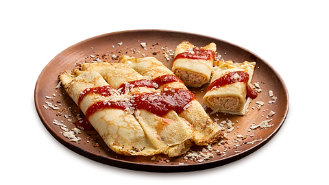

Lasanha Tradicional

Ingredientes:
- 1 massa de lasanha (pronta);
- 500 g de presunto;
- 500 g de queijo mussarela;
- 500 g carne moída;
- 1 massa de tomate pronta;
- sal a gosto;
- pimenta-do-reino a gosto;
- orégano a gosto.
Modo de Fazer:
50 minutos
- Cozinhe a massa da lasanha em aproximadamente em 2 litros de água por 5 minutos;
- Em uma panela cozinhe a carne moída, depois de cozida coloque molho de tomate, o sal e temperos a gosto;
- Comece montando com uma camada de molho, a massa da lasanha, o presunto e o queijo;
- Faça esse processo até tudo terminar;
- Aqueça o forno a 180º C durante 5 minutos;
- Coloque a lasanha no forno de 20 a 30 minutos.
Panqueca de Frango

Ingredientes:
Massa
- 3 ovos;
- 2 xícaras (chá) de leite;
- 1 colher (chá) de sal;
- 2 xícaras (chá) de farinha de trigo;
- 2 colheres (sopa) de manteiga.
Recheio
- 2 peitos de frango sem osso;
- 1 lata de molho de tomate pronto;
- 1/2 cebola picada;
- pimenta;
- salsinha a gosto;
- 1 sachê de caldo de galinha;
- 2 colheres (sopa) de azeite;
- 3 dentes de alho amassados;
- sal.
Modo de Fazer:
30 minutos
- Bata no liquidificador todos os ingredientes da massa durante 3 minutos, deixe descansando;
- Cozinhe o peito de frango em um pouco de água com o caldo de galinha, até ficar bem cozido;
- Retire da panela em que foi cozido e comece a desfiar com um garfo;
- Leve uma panela ao fogo, coloque o azeite a cebola picada e o alho, deixe dourar. Acrescente o frango desfiado e tempere com pimenta e sal e mexa;
- Deixe refogar por 5 minutos mexendo de vez em quando, agora acrescente um pouco de molho de tomate só para dar um corzinha no frango e retire do fogo e reserve;
- Agora faremos a panqueca, use uma frigideira teflon rasa unte-a com um pouco de manteiga;
- Coloque uma quantidade razoável de massa da frigideira que não fique grossa, vá fazendo até acabar a massa;
- Coloque um pouco de recheio na ponta da panqueca e enrole, faça isso com todas, vá colocando todas em uma forma retangular para ir ao forno;
- Agora aqueça o molho de tomate e derrame em cima das panquecas, jogue um pouco de queijo parmesão em cima se preferir e leve ao forno preaquecido por 5 minutos.
Strogonoff de Frango

Ingredientes:
- 3 peitos de frango cortados em cubos;
- sal a gosto;
- 1 cebola picada;
- 1/3 copo de mostarda;
- 1 copo de creme de leite;
- 1 dente de alho picado;
- pimenta-do-reino a gosto;
- 2 colheres (sopa) de maionese;
- 1/2 copo de ketchup;
- 1 copo de cogumelos;
- batata palha a gosto.
Modo de Fazer:
1 hora
- Em uma panela, misture o frango, o alho, a maionese, o sal e a pimenta;
- Em uma frigideira grande, derreta a manteiga e doure a cebola;
- Junte o frango temperado até que esteja dourado;
- Adicione os cogumelos, o ketchup e a mostarda;
- Incorpore o creme de leite e retire do fogo antes de ferver;
- Sirva com arroz branco e batata palha.